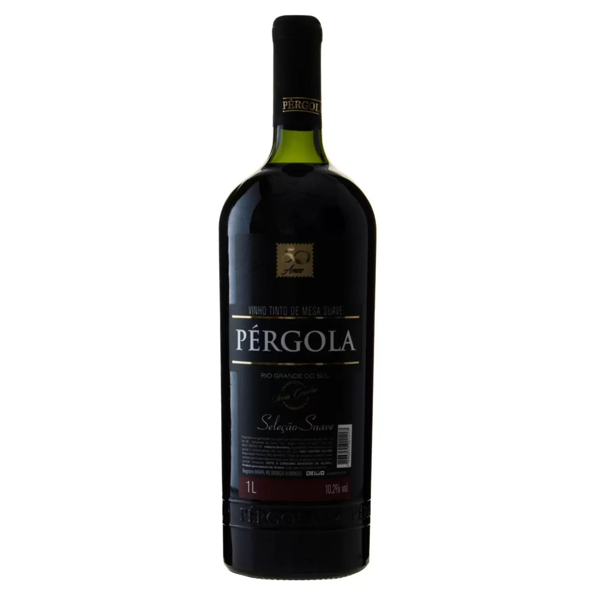

Tipos de Vinho
Vinho Tinto

O vinho tinto é produzido a partir de uvas pretas ou tintas. As uvas são esmagadas e fermentadas com a casca, o que dá ao vinho sua cor escura e taninos robustos. Os taninos são compostos que dão ao vinho uma sensação adstringente na boca e podem contribuir para o envelhecimento do vinho. O vinho tinto pode variar em sabor, de leve a encorpado, e pode ser servido em uma ampla gama de temperaturas.
Vinho Seco
O vinho seco é caracterizado pela sua falta de doçura perceptível. Isso ocorre porque todo o açúcar natural do vinho foi fermentado em álcool durante o processo de vinificação. O vinho seco pode ser branco, tinto ou rosé e é geralmente considerado uma boa opção para acompanhar alimentos, pois sua falta de doçura permite que o sabor do vinho seja complementado pelo sabor da comida.
Vinho Rosé
O vinho rosé é produzido a partir de uvas vermelhas ou pretas, mas é fermentado apenas com a casca por um curto período de tempo, o que resulta em sua cor rosa característica. O vinho rosé pode ser seco ou doce e é frequentemente descrito como tendo um sabor refrescante e frutado. O vinho rosé é frequentemente servido gelado e pode ser uma boa opção para o verão ou para acompanhar pratos leves.